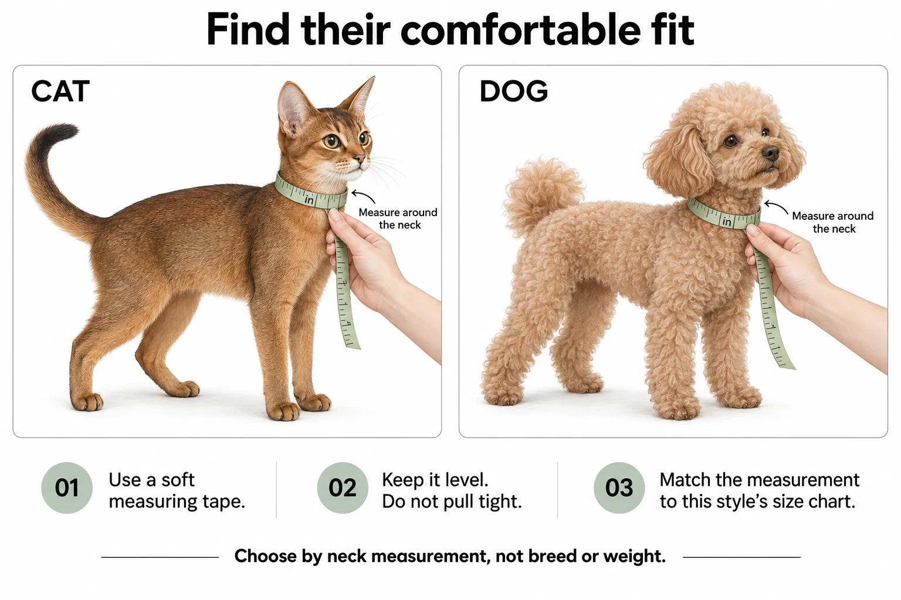
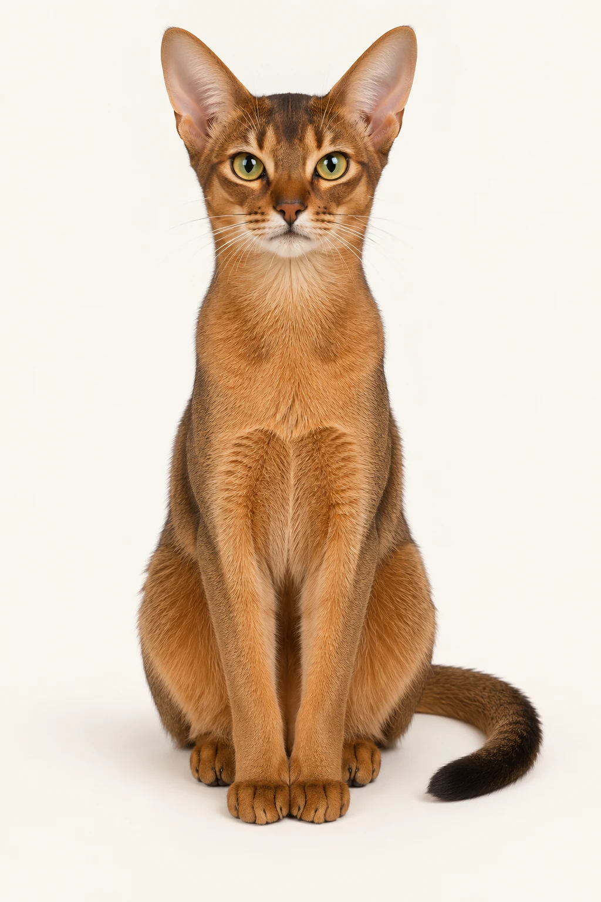
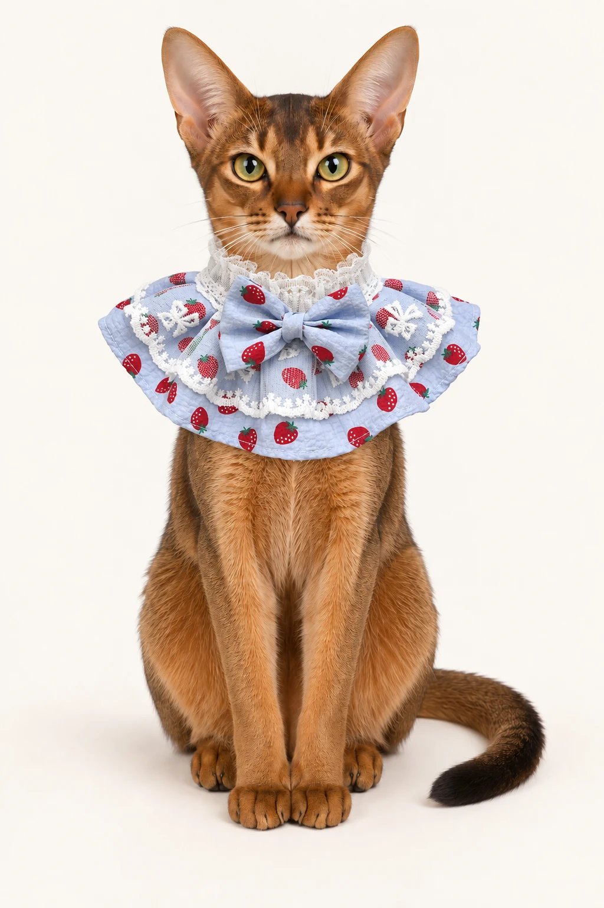

THE FIT GUIDE
How to measure your cat or dog for a decorative collar
A simple neck-measuring guide for decorative cat and dog collars: inches, centimetres, individual size charts and what to do between sizes.


A little lace. A little bow. Entirely them.